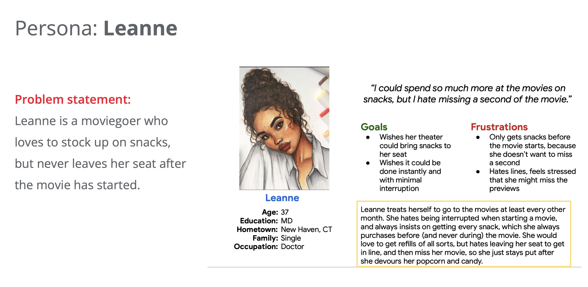
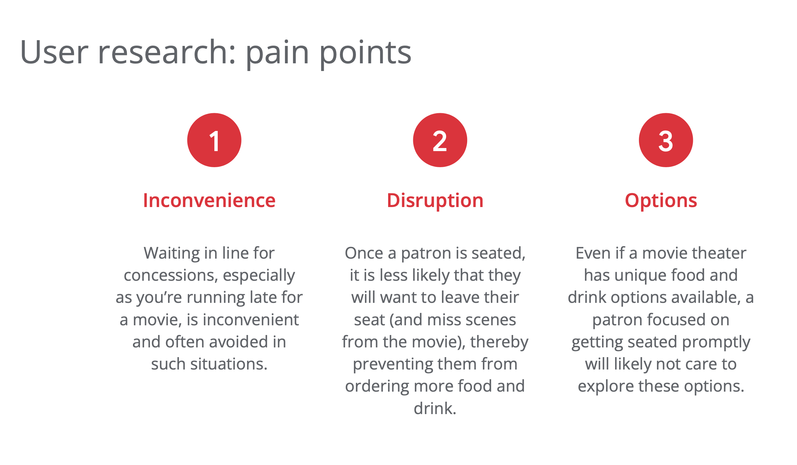

SnackFlix
SnackFlix is a mobile app designed to allow movie theater patrons to avoid lines and interruptions by allowing them to preorder concessions, or get them delivered directly to their seat, anytime they want during a movie.

UX Case Study
UX
Role
I was the lead UX researcher and UX designer of this project.
The Problem
Many movie theater patrons are disinclined to get food, drinks and other concessions when they go to the movies. Long lines, being late, presuming there are not many options and not wanting to leave their seat during the movie are all reasons a patron may not wish to wait in line for concessions.
The Goal
A solution is an app that allows patrons to get a wide variety of customizable concessions delivered directly to their seat, or to pick up a preordered meal, anytime before or during their movie. This encourage customers to order and get what they want without spoiling their experience with interruptions.


User Research: Summary
I conducted interviews and then delineated empathy maps in order to understand the users of this app their needs. The primary user group identified through research was adult movie goers, who either do or do not buy concessions when they go to the movies.
The user group confirmed that people are disinclined to get concessions more than once (at the beginning) of their visit, because they did not want to deal with lines or leaving their seat after the movie has started. They also felt like there weren’t many options to typically choose from, which they didn’t care or have time to find out after waiting in line. Customers wanted more options, the ability to customize orders, and convenience in how they can obtain their food and drink items.
Personas were created from the interviews, and user journey maps were created. Mapping user journey's indicated that users are encouraged to order concessions if they can get delivered to their seat, throughout the movie.
Design: Wireframes
Drafting initial iterations of the wireframes, I wanted to ensure that the core features of the app and the process of ordering were outlined. This included making the order button prominent on the homepage, and the step of the user tapping the button prompting the user to select their movie showing.
Refining the Design
After the usability study, it was determined that it was important to have the order button as the most prominently featured component of the app.
Another improvement the usability studies highlight were the important of the color scheme. Since this app would frequently be used inside of a dark theater, the color scheme needed to be dark so that the user and neighbors would not be inconvenienced by the bright light of a white screen.

High-Fidelity Prototype
The final high-fidelity prototype presented cleaner user flows for ordering a food delivery.
Accessibility Considerations
- For users who are vision impaired, I provided accessibility through adding alt text to images for screen readers.
- Heavy emphasis was placed on including familiar icons for buttons so that navigation was easier for all users.
- All food items include imagery to help all users quickly identify items.
Impact
This app allows users to have access to all food and drink options at a movie theater, without having to wait in lines or leave their seats during their experience. Its design was determined based on the needs of its users and the setting in which they will use the app.
What I Learned
While designing SnackFlix, I learned that the initial wireframes are only an opportunity for users to determine what their needs are, rather than a design that they need to adapt to. Through usability studies, several changes were made that ultimately provide the user an easier, streamlined experience that suits their needs.